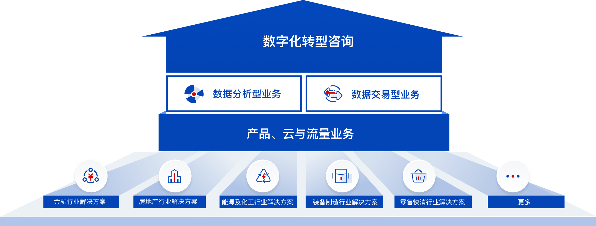

企业数字化转型的建设途径
数字化转型跨越了企业的商业模式、运营模式、传统业务领域的划分、以及企业自身的组织边界，包含了业务与技术的量变与质变，以及两者之间复杂的关联关系。如何结合产业发展的动因和企业内在的基因，将数字化转型落到实处，已经成为全球企业面临的共同挑战。
- 商业模式
- 智慧运营
- 多与融合
- 生态建设
-
商业模式
-
数字化时代的到来，社会经济环境、新技术趋势发生了巨大变化，为商业模式的创新创造了有利条件，如研发模式、采购模式、生产模式、销售方式等都发生了巨大变化，企业也在不断突破现有业务的范围，形成新的商业模式，为企业中长期发展打开空间，在向新的商业模式转变同时也推进了向数字化转型的进展，可以说，商业模式创新是数字化转型的高级形式，也是数字化转型的必经途径。
-
智慧运营
-
数字化时代，随着技术创新空前扩张，竞争格局危机四伏，运用技术构建智慧运营体系已成为企业抢占竞争优势的关键，企业数字化转型面临重大重构和再造，企业需要在数字化战略的引领下，整合企业应用产品以及人工智能、区块链、云、大数据等前沿技术，构建智慧的动态的多种创新的智慧运营模式，促进企业运营不断迈向智能化，挖掘价值，创造价值。赋能客户开创未来。
-
多与融合
-
多域融合是驱动企业数字化转型的强大引擎。随着行业数字化转型的展开，数字化技术和联接技术成为核心内容。数字化转型需要覆盖多层面、多技术领域的综合解决方案，促进联接、计算、云、智能等 ICT 技术应与行业应用结合，强化跨域横向协作，打通信息孤岛，构建端到端的数字化转型价值链，而多域融合是这一过程中的关键。
-
生态建设
-
在数字化背景下，不同产业间的生态共建成为重要课题，其目标在于以数字化解决方案变革企业互动方式，实现产、供、销、研全价值链的产业协同，构建协作化企业生态，同时，建立跨界融合的数字化生态模式，构筑融合共赢的生态能力，与各方合作伙伴共建数字生态，打造与产业链上下游的创新互动模式，发掘产业发展的机会。为实现数字时代的产业共生共赢和可持续发展，企业的数字化转型成为迫切的需要和必然的选择。
以企业价值为引领
的元年企业数字化转型咨询
元年企业数字化转型咨询为企业提供以数字化转型咨询为顶层牵引，以数据分析业务和共享交易业务为核心双翼，以自主可控的元年方舟企业数字化PaaS平台为底层技术支撑，从专业咨询到软件销售和实施、云服务、运营维护的企业数字化转型一体化解决方案。以价值创造理念为指导，分为战略承接、方案设计和转型落地三个层面，通过现状评估、机会识别、场景构思、方案迭代设计、系统持续交付和转型陪跑六类服务为企业的数字化转型持续保驾护航，成就企业数字化转型成功。
资料下载元年企业数字化转型咨询战略地图
-
数字化营销
-
数字化营销和线上渠道建设是⼤部分企业数字化转型的第⼀站，同时也是企业在数字化转型中最容易产⽣创新业务的阶段。需要以客户需求与服务为中心，构建“数字感知-数字洞察-数字营销-数字服务”营销全流程。
-
数字化运营
-
在企业内部构建同时囊括面向产品、项目、服务的多种运营模式，贯穿企业全生命周期，推动企业降低总成本、提高资源利用率，帮助企业实现以客户为中心的数字化转型。
-
数字化生态
-
每个企业往往代表⼀整条产业链，拥有⾜够的要素资源，传统企业通过提供开放创新平台，建⽴围绕⾃⼰产品的开放式创新⽣态圈，吸引更多的第三⽅开发者或合作伙伴，在此⽣态圈内进⾏新功能的研制开发，为⽤户提供更加丰富的服务，实现共赢。
元年企业数字化转型咨询服务架构
数字化转型咨询和落地服务 助力企业释放数据资产潜在价值
-
经验沉淀
-
二十年丰富的业务咨询经验和企业数字化转型前瞻研究的专业积累。
-
规划落地
-
从企业战略出发、关注企业现实能力和当前的市场竞争环境，结合业务整体布局、精准切入、快速迭代。
-
视野专注
-
聚焦企业级数字化转型服务的战略引领，始终寻求用专业的咨询服务指导企业数字化转型规划。
-
实施保障
-
国内顶尖的实施运维团队，致力打造国内最强“咨询+落地”的一体化服务模式，为客户提供全方位的数字化转型服务。
-
技术支持
-
完全自主可控的低代码延展的中台架构体系与基于云原生、微服务、容器化的ECS技术中台，共同打造企业新一代业务交易运营和管控一体化的PAAS平台。